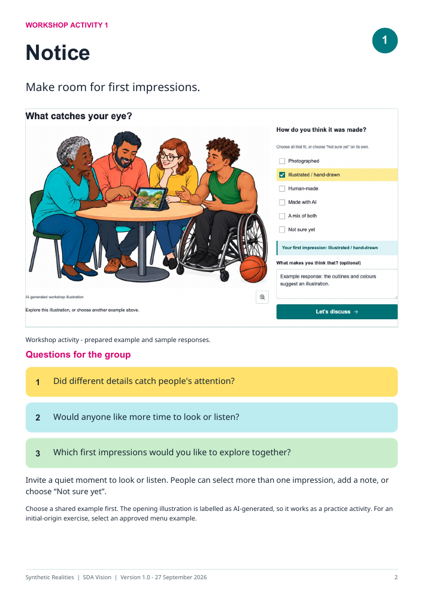
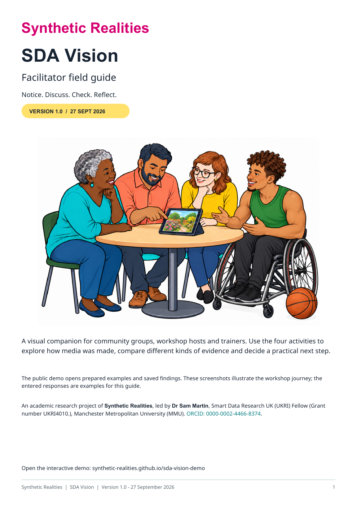
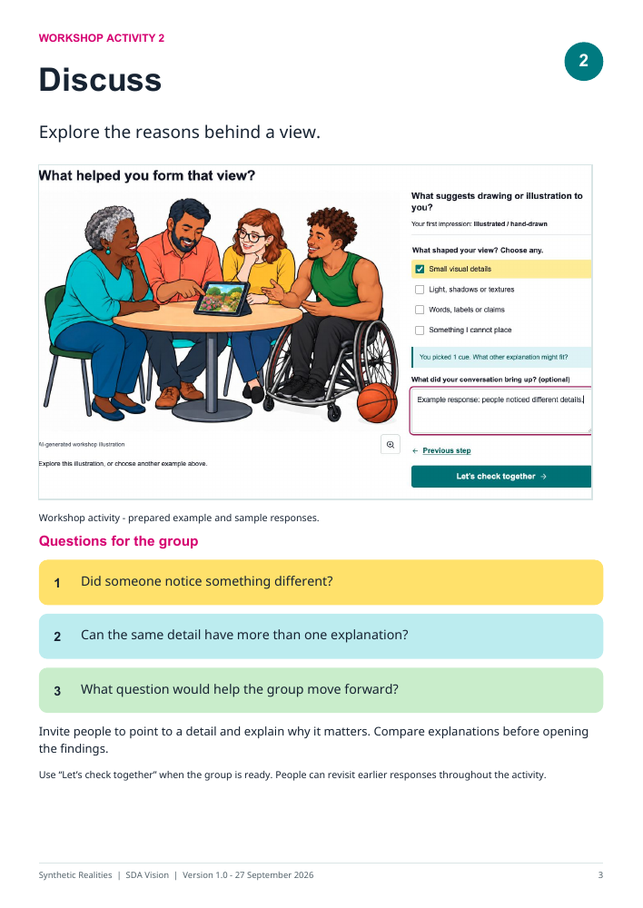

Workshop Activity 1
Notice
Make room for first impressions. Give people time to look or listen, choose a response and explain what caught their attention.

Open Activity 1 preview in a new tabSDA Vision · Facilitator field guide
An illustrated companion for people leading thoughtful conversations about how media is made, what the evidence shows and what to do next.
For community facilitators, trainers, educators and researchers running workshops, conference sessions or online discussions. Use the guide alongside SDA Vision’s Community Workshop, adapting the questions to your group.

The guide combines screenshots, colourful discussion prompts and facilitation notes. The public website provides prepared media and saved results, so the group can concentrate on interpreting the evidence.
These are the first two activity pages from the approved guide. Open either preview to see it at full size.
Workshop Activity 1
Make room for first impressions. Give people time to look or listen, choose a response and explain what caught their attention.

Open Activity 1 preview in a new tabWorkshop Activity 2
Explore the reasons behind a view. Invite people to point to details and compare explanations before opening the findings.

Open Activity 2 preview in a new tabThe six-page PDF includes an introduction, all four workshop activities and guidance for bringing the discussion together. Save a copy for preparation, printing or use alongside a shared screen.
Version 1.0 · 27 September 2026 · 6 pages · 5.4 MB